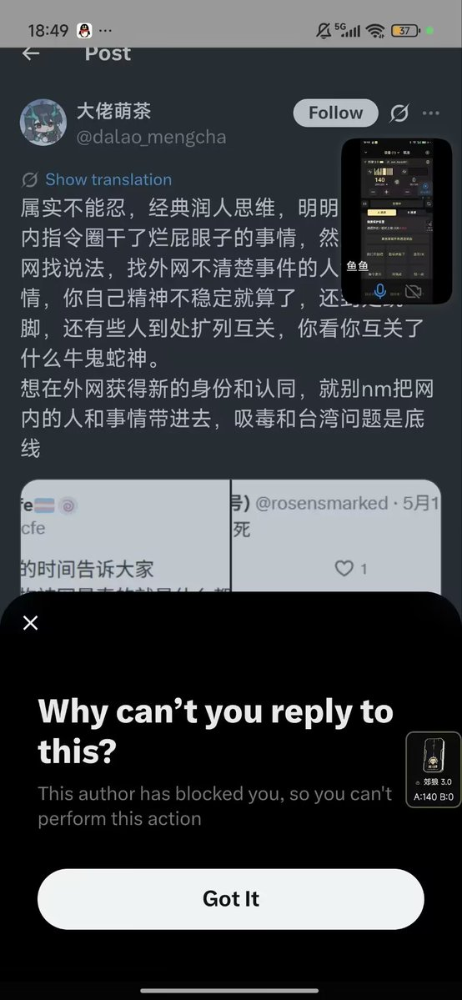

Cbscfe
@Cbscfe
跟 @N_ull_0x0 开了一天多的音趴后看到了这个消息
repost不了原帖因为这个人他妈的推特也给我拉黑了
神了
首先我可以给你扣一顶反跨的大帽子，把我的推优们称为牛鬼蛇神
还有你都翻墙了，都来发那些色情内容了还没有醒悟吗
吸毒和台湾问题是底线去你妈的
你守着你的底线那你滚回墙内去吧

DeatH SUNlight
@dhyangguang
装你妈逼清白呢，你以前推特那些事我们他妈的不是不清楚
你他妈是不是以为推特销号了就没事了
你一个坐拥2.5万粉丝的公共人物你私底下竟然是这种人？
在群内多次跟群友聊骚的是你吧
别把造黄谣当借口行不行，你动态已经说明一切了
#大佬萌茶 #drama https://t.co/1SXqlit8R3